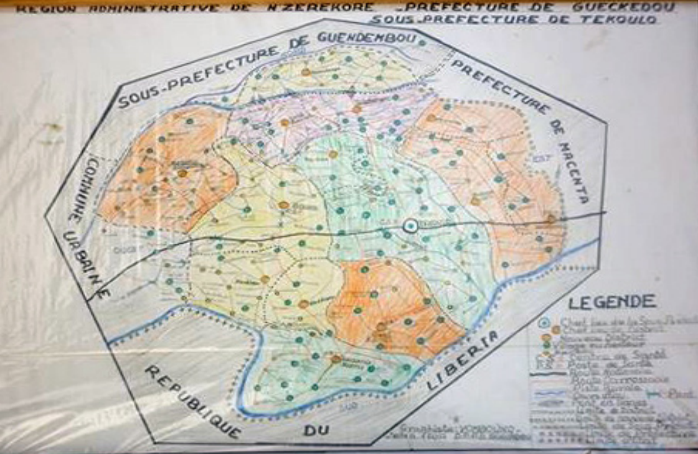
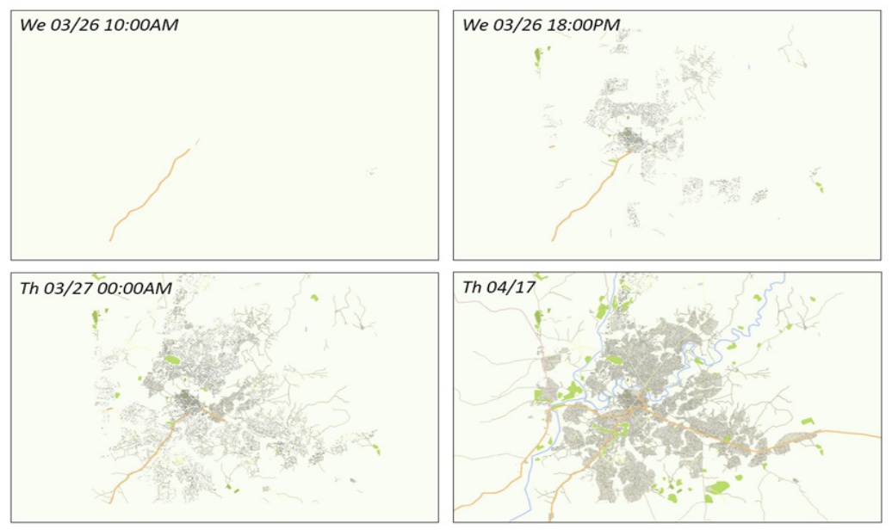
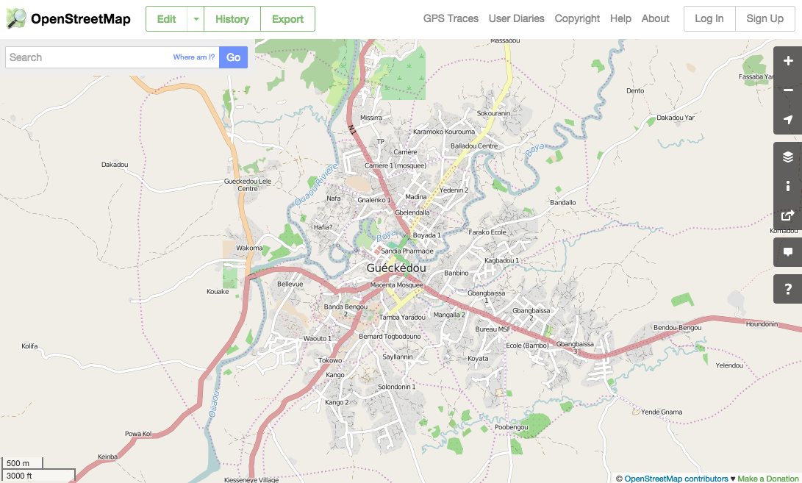
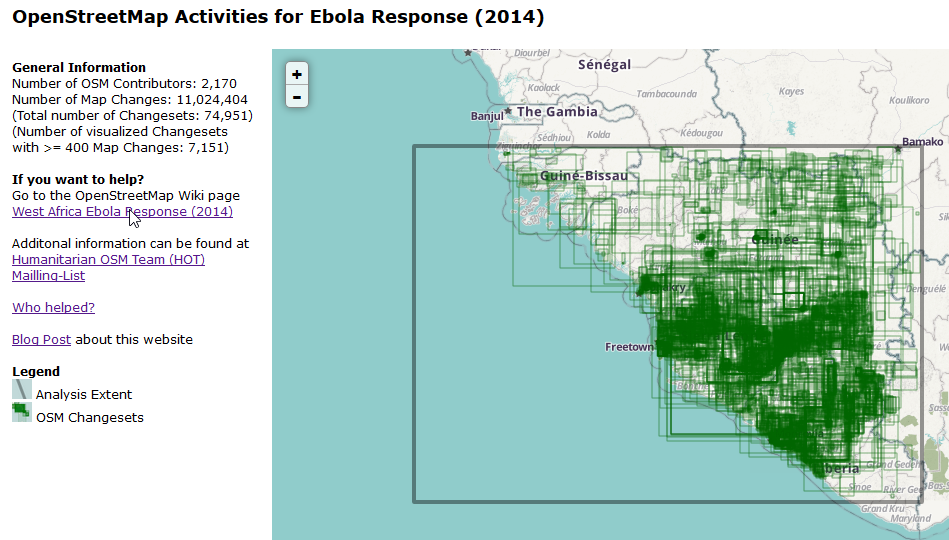
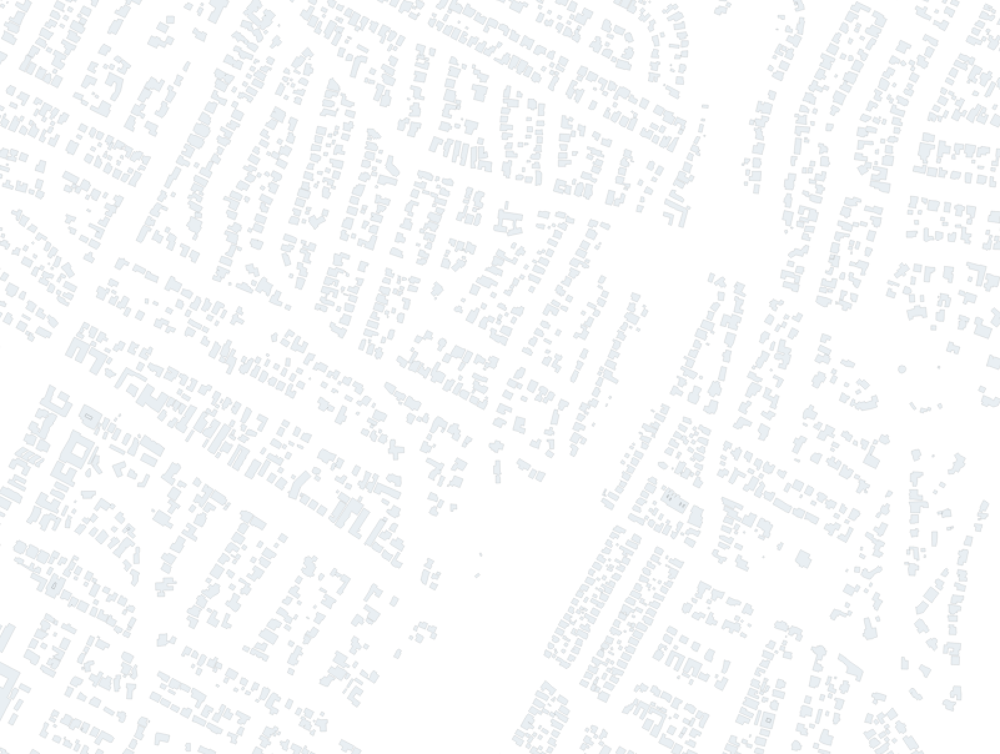
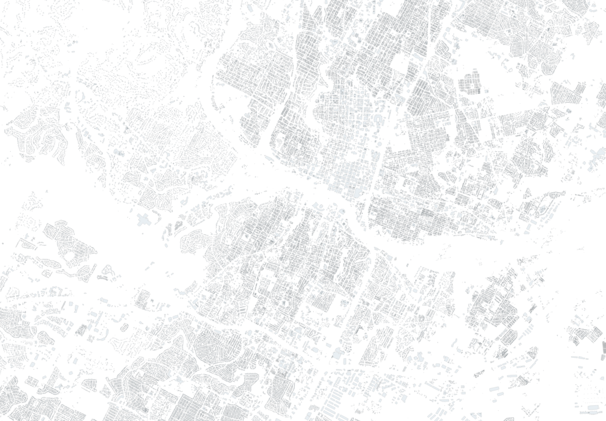

OpenStreetMap
What is OpenStreetMap?
map of the planet
free to edit
free to use
this enables lots of cool things
OSM also saves lives




you can download OSM data and do your own cool, life-saving things
OSM is licensed under the Open Database License:
ODbLTL;DR free to share, create, adapt as long as you attribute and share-alike
you can download the whole
planet file
but it is huge (~25GB compressed)
metro and country-level extracts are available
lots of tools for import to databases, shapefiles, etc
data model?
only three parts
nodes / ways / relations

nodes are points
ways are connected sets of points: lines, polygons
relations attach meaningful information to nodes and ways
where do we start?
two ways to make digital edits: web editor
iD or advanced editor
JOSM
you can also go outside
bulk importing data is good, too
get feedback before you import anything!
which leads me to....
city of austin buildings dataset


all those buildings yearning to be free
status: waiting for official word on data license
helpful links
some other neat things
This presentation was adapted (ripped off) from Maptime
OSM 101Let's map!


 sign up here!
sign up here!